Update: Wired Cover Article
October 01, 2010
Here is the article that Wired published on Elon Musk and Telsa. I found it fascinating. An EV insider I know debunked some of it as just good story telling, but it is still a good story.
(I mentioned reading the article in hard copy back in this post.)
Answers to Old Questions
October 02, 2010
Apparently my post on the capacity of the fuel tank generated some interest in the comments over on GM-Volt.com. That’s a site which has been going for over three years with a post-a-day. I feel like such an amateur. (More on that site in a separate post, I’m not really trying to do anything comparable.)
One of the comments on my tidbit mentioned a page of questions, many of which have already been answered. I tried to answer the remaining set from my recent visit to Detroit.
Read more…
Detroit Trip
October 02, 2010
This blog was started September 9th. That was a couple days after GM called to see if I was interested in being on the Customer Advisory Board for the Volt. I wasn’t allowed to say anything about it, since they wanted to be the ones to announce it to the press. They didn’t say how I was selected, although I had also been asked to come test drive the Volt at Dodger Stadium and back then it was clearly because I had leased an EV1.
I never got the call about the Project Driveway. That was letting people drive hydrogen-powered Equinox vehicles for a while. I probably would have enjoyed that, even though it is an SUV. There’s nothing like having water being the only tailpipe product. Several of the other CAB members were former Project Driveway program.
Read more…
Not Blown Away by the Leaf
October 03, 2010
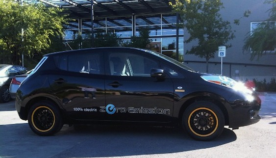
I really wanted to love this car. I mean, if I were Lance Armstrong and Nissan had already delivered my Leaf (pictured above), maybe I would be writing about how much I loved this car. Instead, I made an appointment to test drive the Leaf at the AltCar Expo here in Santa Monica.
Read more…
Caught
October 04, 2010

The Detroit News has the scoop on how I got my scoop about the size of the Chevy Volt's gas tank. They wrote an entire article about the Customer Advisory Board, but that photo made me laugh.
Read more…
The New Gas Station
October 04, 2010
That might step on the Leaf marketing a little. Sorry. I just read this article, about how companies are trying to figure out how to make money from electric vehicles. It's difficult. The cost of ownership is just a lot lower than with a traditional internal combustion engine car.
It will be interesting in the next decade to see if gas stations are slowly winnowed out until they are 300 miles apart, but there are chargers every few miles (the way the gas stations are placed now).
First Giveaway
October 04, 2010
My hope is that once I have my Volt I will be able to do occasional test drives with blog readers. I have no idea how I will coordinate that. But that's my hope.
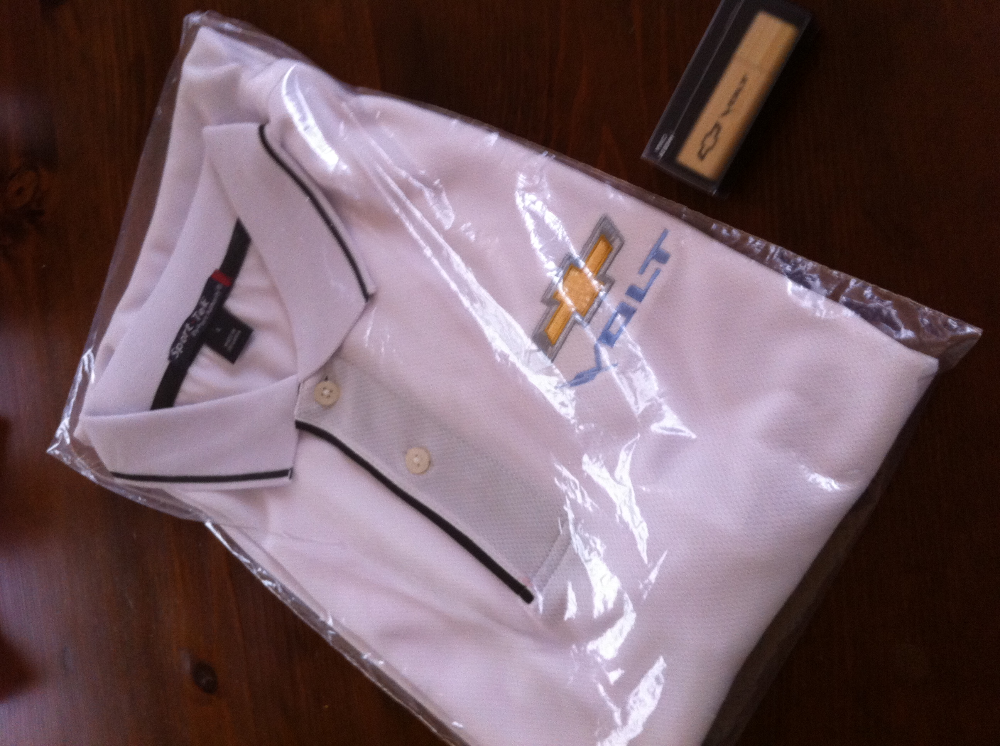
Read more…
Racing the Leaf
October 05, 2010
The Stig liked it more than I did, but he got to drive it more. He did mention the light feeling of the steering.
[youtube=http://www.youtube.com/watch?v=-Q0x8onTErk&fs=1&hl=en_US]
GM Sets Charger Price
October 06, 2010
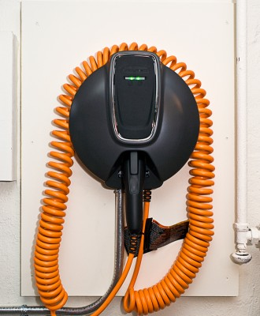
During our dinner on the Detroit trip one of the executives discussed the chargers. He said that it was important for GM to have a supply of the chargers to sell with the cars, so that they didn't get caught in a situation where they couldn't sell a car because there wasn't a charger to go with it.
Read more…
OnStar Command Center
October 07, 2010

Read more…
Answer to MyNissanLeaf Readers
October 08, 2010
I wrote this post about my first experience driving the Nissan Leaf. I was surprised to see it get mentioned over on MyNissanLeaf, a web forum devoted to the car, but it was and the readers wrote a lot in response to it. Eventually I felt that to not respond would be rude. The answer I posted to their site is below, so you don't have to hunt it down.
MyNissanLeaf Answer
Read more…
Non-suit for the Day
October 09, 2010
When I showed up in Detroit GM was kind enough to give me two golf shirts (someone else called them polo shirts) that had the Chevy Volt logo on them. I stopped wearing shirts with any sort of writing on them a few years back. I tried to give one to a friend here in LA who is excited about the car. At first he was interested, then he looked it and said, "I want the car, not a shirt. No thanks."
So I ran a little contest and I am sending out the white one (pictured on that page) to the winner. The runner-up got the blue one.
Read more…
Wanna drive a Volt?
October 10, 2010
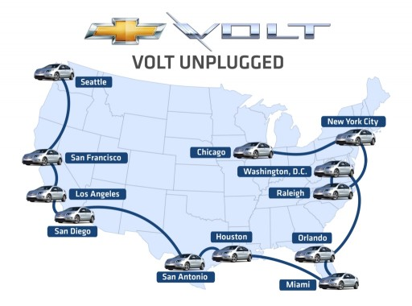
Of course you do. But it will be November before your local dealer has one. If that dealership is one of the 600. So GM is making it easier for you, they are bringing the car to you. They're calling it the Volt Unplugged tour. Just click on that link and pick a drive time. Even if you don't get a slot, show up where they are going to be, because people don't always show for their reservations and you could slip in.
I plan on being at the event in Los Angeles.
Twizy
October 10, 2010
I can't bring myself to get a neighborhood car. It seems like such a luxury to have a vehicle that can't go on even the secondary roads in Los Angeles. But if I was going to get one, I would jump on the Twizy, which looks like a ton of fun. There's nothing like sitting in front of your passenger, blocking their view. Would you get aviation headsets to talk to one another, or would they just talk to the back of your head?
Motor Trend
October 11, 2010
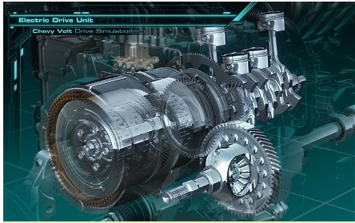
Wow, I know nothing about cars and mechanics. This article is proof of that, since I can't understand the slide show completely, and if you can't follow along with the pictures, just the text is going to be hopeless. But they wrote a nice technical article about the Volt and if you should read it if you like to know how the spinny bits fit together. I just like to step on the pedal and have it go.
Not a Real EV
October 12, 2010
Oh dear. This is just all over the Internet today. The first two times I spotted it (Engadget and their sister site about cars) I wrote a comment. That follows this short entry.
There is some very complex engineering in the Volt. Enough for there to be a patent on the drivetrain. I am pretty sure that patents are a good sign of innovation (I hold one myself in the realm of community building on the Internet). The engineering behind propulsion has to follow the same natural laws that everything else does. And the demands on an American car are sort of astonishing. It has to sit in stop-and-go traffic and travel at speeds close to a hundred miles an hour. It has to be happy in temperatures forty degrees below zero and one hundred thirty above. Crazy extremes.
Read more…
Got Live if you Want It
October 13, 2010
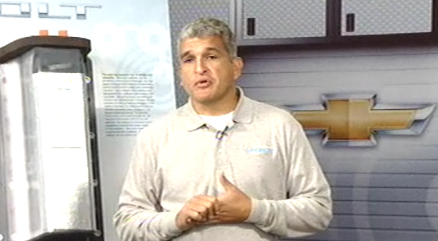
Actually, it's recorded. But that's not the title of a Rolling Stones album. Here is Larry Nitz and Micky Bly discussing the propulsion system on the Volt. I love that they took questions live from the 'net. This is way too much information for me, I just want it to drive electric for the driving I do most of the time. If you are curious about the controversy around the blogosphere about the Volt not really being an electric car, this should lay it out for you.
Patience, Grasshopper
October 14, 2010
I've never been a fan of instant gratification because of all the waiting involved.
I am very persistent, but that's only because I am unable to let go of things and am willing to keep poking the bear until we get a show. This has not always been a good trait, but it did get us an electric Rav4 ahead of James Cameron, even though he was ahead of us on the list. That's what calling even morning at 10am will do for you.
Read more…
EPA MPG LATE
October 15, 2010
The federal government can't decide what the mileage number for the Volt is going to be. And they are really scratching their heads about the Leaf. How many miles per gallon do you get when it is zero gallons burned? It would be so great if the window sticker just said, "undefined."
Government regulation is next to useless in this instance. There needs to be a private company that does this work (like the Underwriters Laboratory). We would know even before the car was in production what the goals were, how the final numbers were going to be calculated, and manufacturers could get real information faster.
Read more…
Good Ink
October 16, 2010
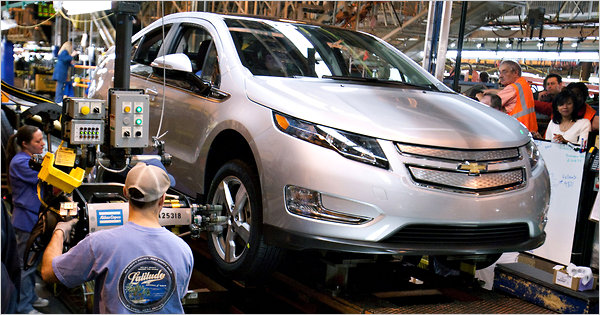
You know you've made it when you hit the New York Times, right? Well, the Old Grey Lady finally coughed up an article, so that's a good sign. Onward!
Forty Miles Sounds Easy Enough
October 17, 2010
GM invited dozens of journalists to Detroit to test drive the Volt. It sounds like a great time and I wish I had the standing to go. When we were departing from the CAB visit Chelsea Sexton was saying she wasn't sure why she was going to return in a week to "basically do the same thing again." It turns out it was totally different. And she kicked ass on the range competition.
My favorite thing is that forty miles was the norm for what journalists were getting from the battery.
Jet-powered Car
October 18, 2010
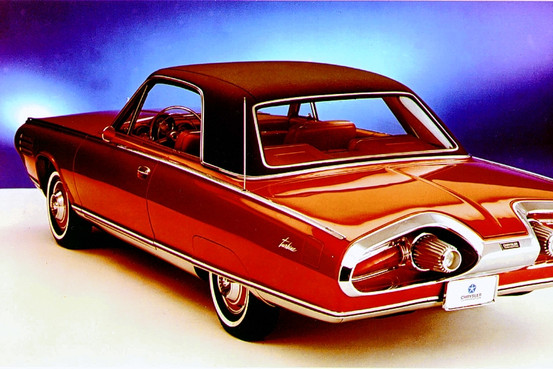
The Wall Street Journal is running a fascinating article about a jet-powered car. All of it is good reading for anyone interested in cars, but the item that caught my eye is that Chrysler produced fifty cars and then put them in the hands of American families. 30,000 applied. 208 lucky drivers got to test the car. Sort of an early version of the Volt's Customer Advisory Board.
The Last Mile
October 19, 2010
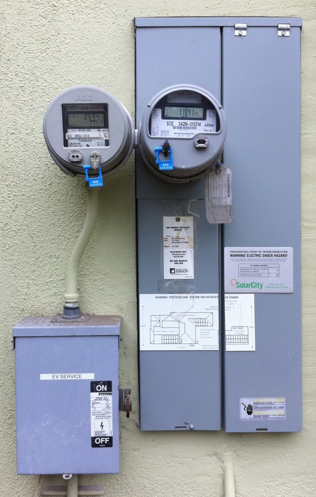
Read more…
Last Mile Finished
October 20, 2010
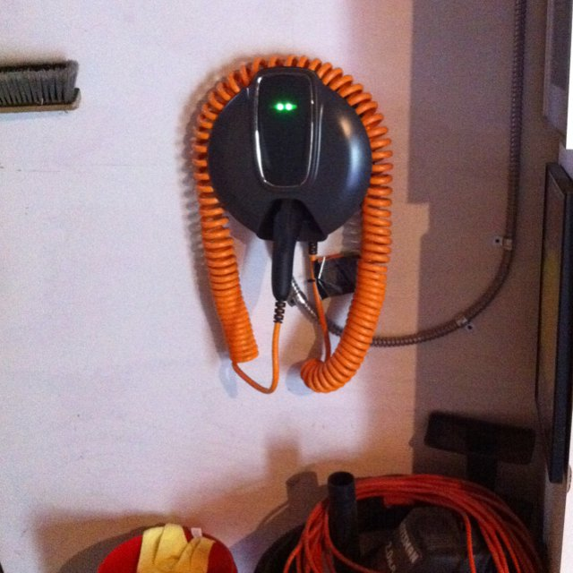
That was certainly easy. I detailed it in Tweets, but the electrical contractor that GM brought in could not have been better. They showed up at 11:20am for an 11:30am appointment. Scott B. from GM wanted to see the install happen and since he was on time, he nearly missed it.
Read more…
The Real GM Volt Blog Deal
October 21, 2010
I love Nero Wolfe. If you don’t know him and you like mysteries you should look him up and read a few. They are fantastic. Rex Stout worked hard and made a real character to live inside the mysteries he constructed. Nero had rules he lived by and his rigid schedule and guidelines for interaction with clients made even the less-interesting murders fascinating reading.
Read more…
In Other News...
October 21, 2010
One cannot blog in only one place, so I wrote a piece for the Huffington Post. I reviewed a book by my friend Renee French, "h day."
Partnership on the Leaf Side
October 21, 2010
This is the sort of thing we should see happening with the Volt community.
Get it together, guys.
LA Times Article
October 21, 2010
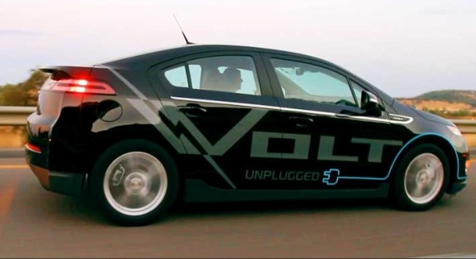
This is the sort of spontaneous publicity that the Chevy Volt needs to get ahead. (A very nice article in the Los Angeles Times.)
Game Changer
October 22, 2010
I know that this sort of thing is going to hit the market in the next five to ten years. And it will be a real game changer. That's a bit of battery that the researchers at Rice University and Lockheed Martin created. It increased the storage capacity of a Lithium Ion battery tenfold. That means the Volt would have a four hundred mile range. It might cost more than forty grand, but it would be able to go to Vegas and have a lot of range left over.
Read more…
Other Electric Things
October 23, 2010

Primarily, lights.
Read more…
Dan Neil on the Volt
October 24, 2010
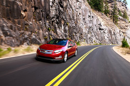
I don't know how the Wall Street Journal's access policy is going to work out for you here. If you can get through their pay wall, if it's up, there is a great article by Dan Neil about how important the Volt is for America.
Slower
October 25, 2010
It doesn't look like the Volt is going to get here this week. That's a bit discouraging.
I need to report on the PlugIn America dinner, which was a lot of fun (and another opportunity to sit in the Volt). And on the charger installation (an epic which continues because Santa Monica's electrical inspector wouldn't sign off on the wiring performed).
Read more…
Conference Call
October 26, 2010
Probably responding to the CAB members' impatience to get their cars, we received word today that there word be a conference call on Thursday (noon Eastern time).
They will give us a "vehicle scheduling update," which probably means we will hear that the cars are delayed a week. (Not a surprise, since we didn't get them on Monday and no call to schedule a delivery later in the week. So it can't happen this week, making next week the subsequent target.)
Read more…
New Advert
October 27, 2010
[vimeo 16245374]
This is the new ad for the Volt! Exciting!
Graphics on the Car
October 28, 2010
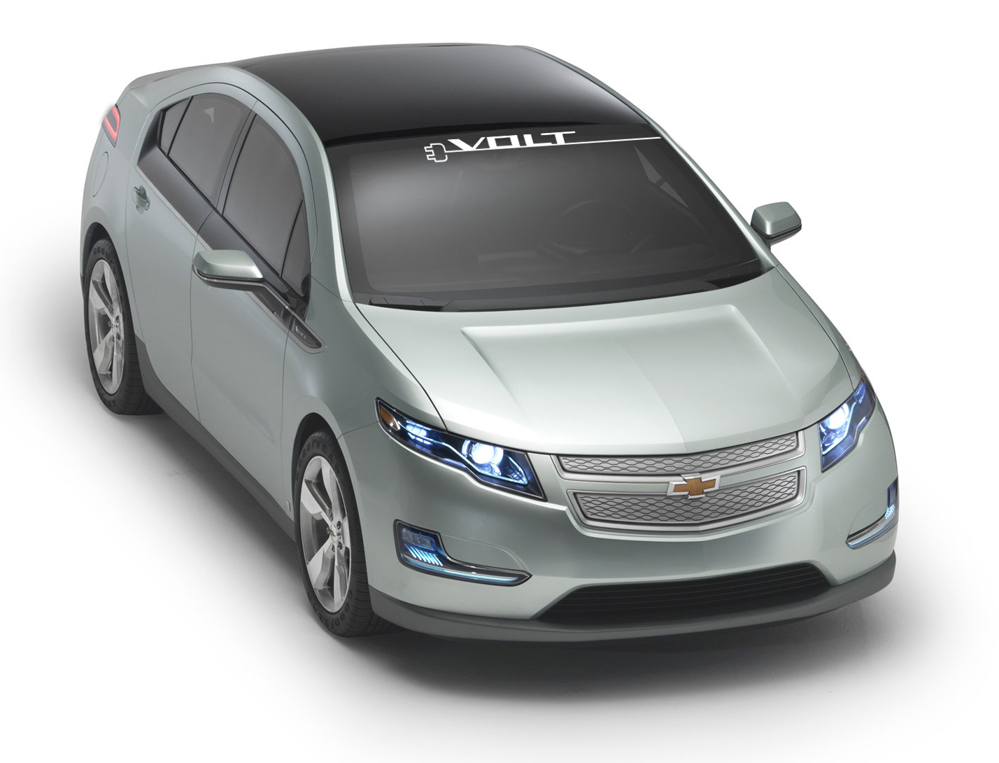
While we were in Detroit the CAB members spoke up and said we'd love to have graphics on the car to promote it more. This was the result. There are much more interesting (and bolder) graphics on the Unplugged Tour cars, but we won't be getting those.
More in a moment after the conference call.
News Blackout Once a Month
October 29, 2010

The conference calls between GM and the members of the Customer Advisory Board will be off-the-record. There will be no reporting of agendas, minutes or details revealed in the calls. I was probably the reason the rule was mentioned, since I had already posted the agenda for the first conference call.
Read more…
The Continuation of the Charger Installation
October 30, 2010
There are two parts to my charger installation. One is the hookup of the actual charger itself (detailed in the Last Mile Finished post). The second is the proper selection of a rate from my utility company (Southern California Edison) and installation of whatever equipment is necessary to measure the kilowatts used at that rate.
Complicating the second matter, our house is equipped with a bunch of solar panels, so the whole house is on a Time Of Use (TOU) meter. And there is already an Electric Vehicle in the garage, so before we had the solar we had a TOU-EV meter installed which just measure the juice used for charging the car.
Read more…
Meter Muddle
October 31, 2010
Continuing on from the exposition at the beginning of the continuing saga of charger installation, this is the state of affairs related to the electrical meter.
Over the summer Southern California Edison sent me a notice that they would have to removed the TOU-EV because the dual-meter adapter was no longer being used. There would be no cost to me and someone from SCE would contact me to arrange the work.
Read more…
← Previous | Next →
{kind=link}
{kind=link}
{kind=link}
{kind=link}
{kind=link}
{kind=link}
{kind=link}
{kind=link}
{kind=link}
{kind=link}
{kind=link}
{kind=link}
{kind=link}
{kind=link}
{kind=link}